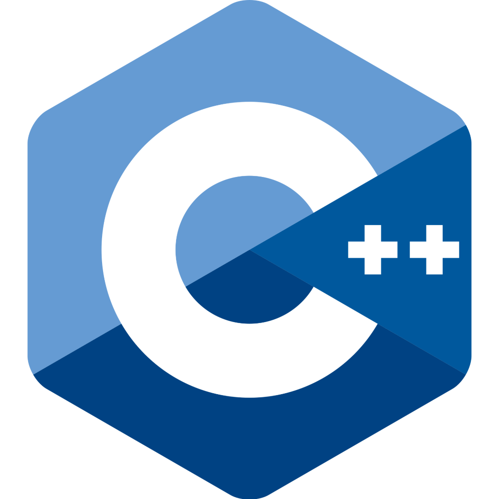

À propos de moi

GUILLERMO GOMEZ
Carlos J.
19 ans
Bonjour et bienvenue sur mon portfolio en ligne !
Je me présente, je suis Carlos, je suis en deuxième année de BUT Informatique.
Passionné d'informatique depuis petit, j'ai commencé à "coder" lorsque je suis rentré au collège.
J'ai fait une filière général au lycée, avec comme spécialités : Mathématiques, Numérique et Sciences de l'Informatique (NSI), et Anglais Monde Contemporain (AMC).
En classe de terminale, j'ai décidé de garder Mathématiques et NSI.
J'ai donc passé un Baccalauréat Général avec comme spécialité Mathématiques et NSI. Je l'ai obtenu avec la mention Bien.
Après mon BUT Informatique, je veux faire un Master en informatique afin de faire le métier que j'ai toujours voulu faire: Développeur Web
Voici quelques unes de mes qualités :
- Créatif
- Dynamique
- Sérieux
- Sociable
- Autonome
- Rigoureux
Portfolio
Compétences
Durant ces années, j'ai acquis de nombreuses compétences en langages informatiques, comme par exemple : (cliquez dessus !)
|
HTML HTML, acronyme de HyperText Markup Language, est un langage de balisage utilisé pour structurer et présenter le contenu d'une page web. Il utilise des balises pour définir différents éléments tels que les titres, les paragraphes, les liens, les images, etc. |
CSS CSS, ou Cascading Style Sheets, est un langage de feuilles de style utilisé pour définir la présentation visuelle des documents HTML. Il permet de spécifier les styles de mise en page (couleur, police, taille, etc.) pour chaque élément d'une page web. Le CSS fonctionne en associant des règles de style aux éléments HTML, ce qui permet de séparer la structure et le contenu d'une page de sa présentation. |
Python Python est un langage de programmation interprété, de haut niveau et polyvalent. Il est apprécié pour sa syntaxe claire et concise, ainsi que sa facilité de lecture et d'apprentissage. Python prend en charge différents paradigmes de programmation, notamment la programmation orientée objet, impérative et fonctionnelle. |

C++ C++ est un langage de programmation polyvalent et puissant, largement utilisé pour le développement de logiciels système, d'applications de bureau, de jeux vidéo, de logiciels embarqués et bien plus encore. Il offre un support pour la programmation orientée objet, la programmation générique et la programmation procédurale. C++ est connu pour sa performance, sa flexibilité et sa capacité à gérer des systèmes complexes. |
Postgre SQL PostgreSQL est un système de gestion de base de données relationnelle (SGBDR) open source, robuste et hautement extensible. Il prend en charge les fonctionnalités avancées de SQL, ce qui en fait un choix populaire pour les applications nécessitant une manipulation complexe des données. |
Bash Bash est un langage de commande et de script utilisé principalement dans les systèmes Unix/Linux pour automatiser des tâches et gérer des processus. Il permet d'exécuter des commandes, manipuler des fichiers, et créer des scripts complexes grâce à ses structures de contrôle comme les boucles et les conditions. |
JavaScript JavaScript est un langage de programmation de haut niveau, interprété et orienté objet, principalement utilisé pour créer des pages web interactives et dynamiques. Il est souvent combiné avec HTML et CSS pour créer des expériences web complètes et interactives. |
QT Creator QT Creator est un environnement de développement intégré conçu pour créer des applications multiplateformes, principalement en C++ et utilisant le framework Qt. Il offre des outils de conception graphique, de débogage et de gestion de projet pour faciliter le développement d'applications sur des systèmes comme Windows, macOS, Linux, et Android. |
Java Java est un langage de programmation et une plate-forme de calcul lancé par Sun Microsystems en 1995. Depuis ses débuts modestes, Java a beaucoup évolué. A l'heure actuelle, une grande partie du monde numérique dépend de Java : de nombreux services et applications reposent sur cette plate-forme fiable. |
Ces années m'ont également permis d'acquérir certaines compétences professionnelles, telles que :
Travail en équipe
Leadership
Organisation
Polyvalence
Responsabilité
Discipline
Contact
|
+33 6 60 75 37 13 |
|
carlos.guillermogomez18@gmail.com |
|
|